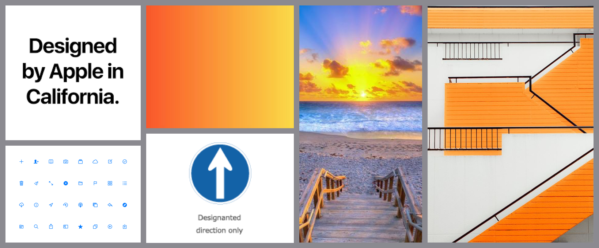
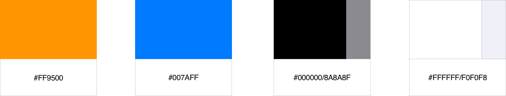
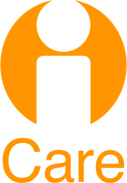
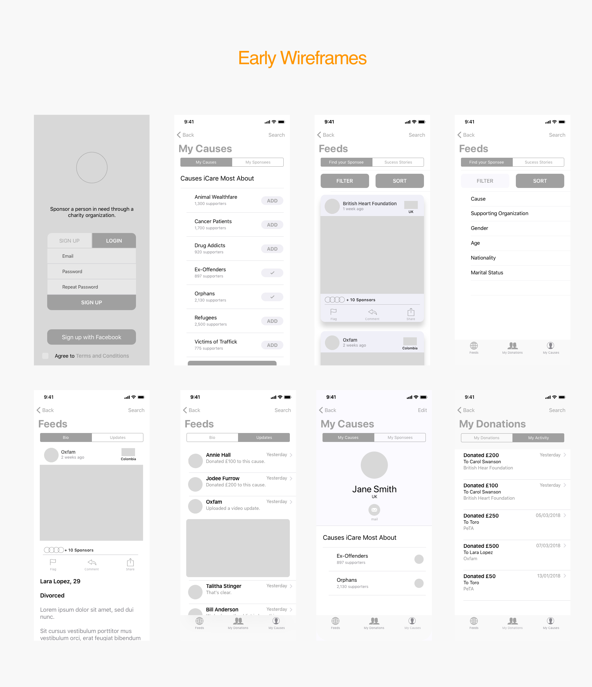
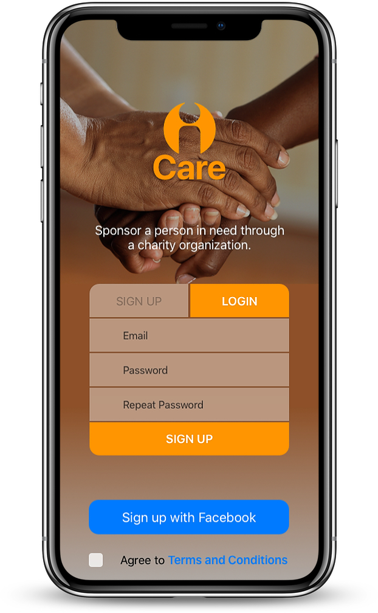
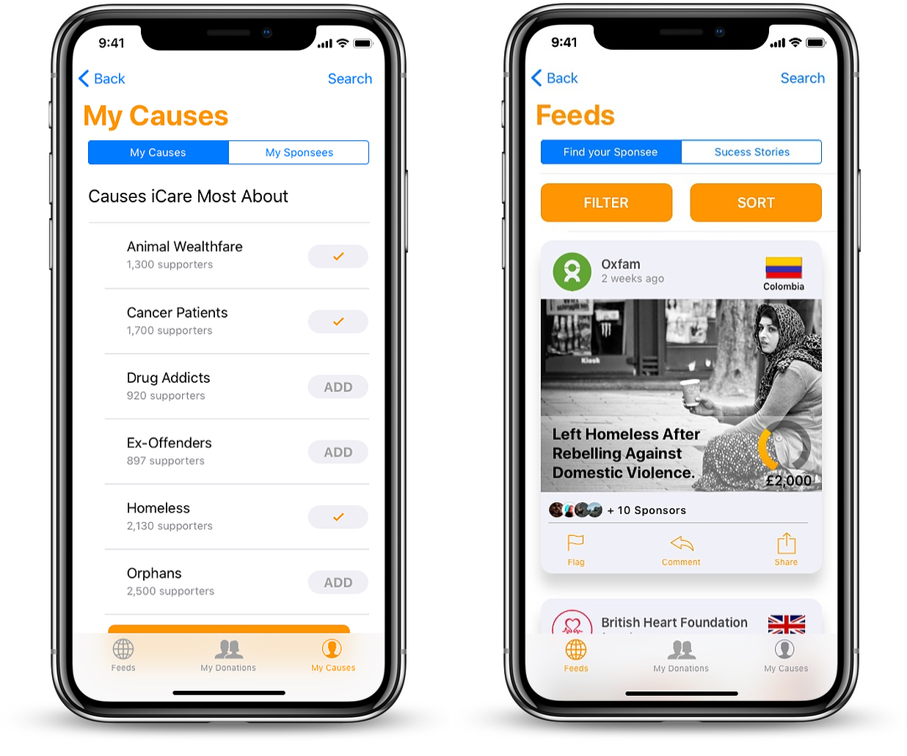
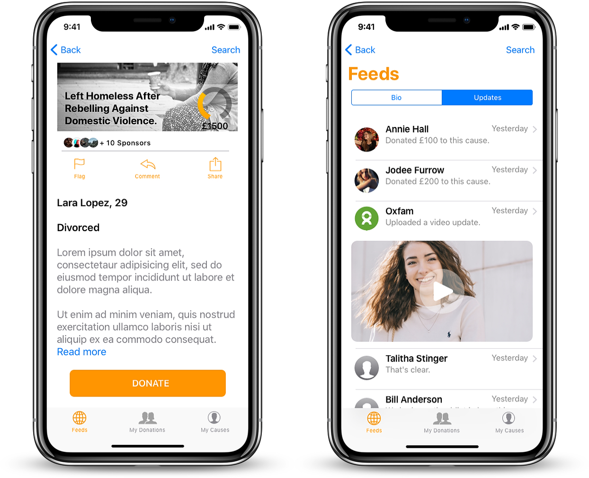
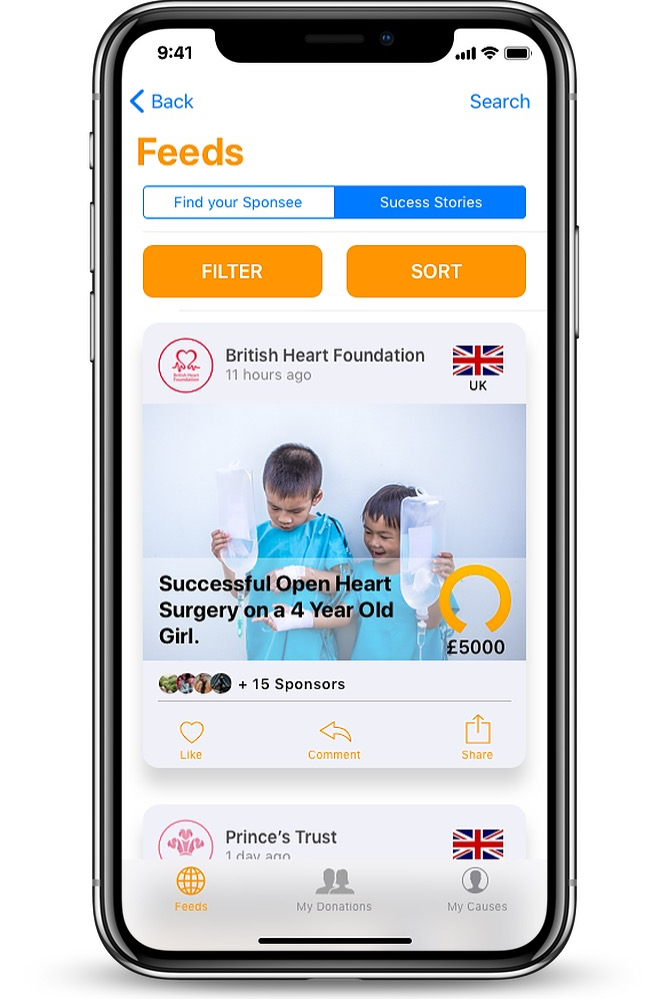
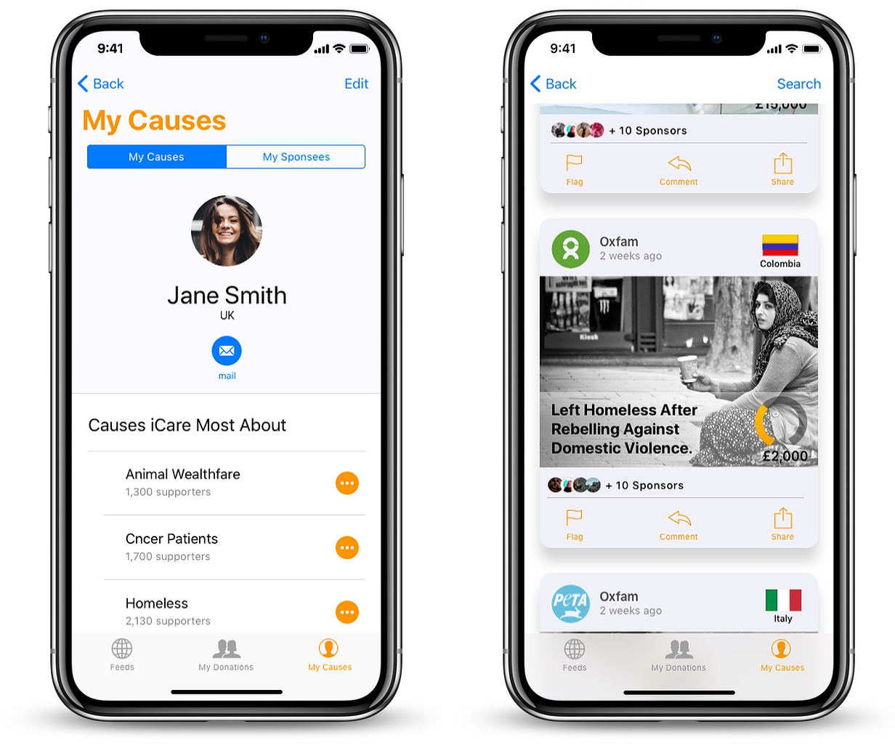
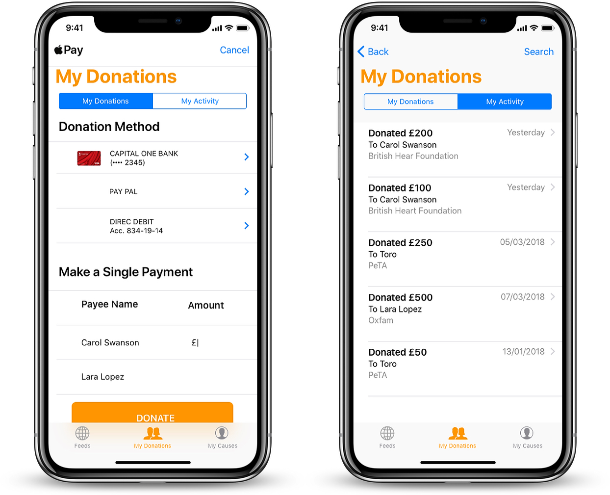

iCare APP
DESARROLLO
La estética de la aplicación fue pensada para ser brillante, atractiva y limpia.
La interface del usuario tenía que ser rápida y fácil de navegar porque era necesario atraer la atención del usuario rápidamente a las causas y simplificar el proceso de donación,
para que la intención de donar no se disuelva en la niebla de una funcionalidad compleja.
PALETA DE COLORES
LOGO

Con tantas organizaciones benéficas y compañías de financiación colectiva existentes, el logotipo de iCare tenía que destacar y ser fácilmente reconocible, memorable e impactante.
El logotipo se inspiró en las señales de tráfico, ya que proporcionan los elementos que buscábamos.
TIPOGRAFÍA
iCare fue diseñado para ser una aplicación nativa de iOS, por lo que la tipografía es San Francisco, según las pautas de iOS.
PRIMEROS WIREFRAMES
MVPs
1. Creación de cuenta: alcanzable con el clic de unos pocos botones.
2. Selección de las causas de interés y visualización de noticias: permitir a los usuarios elegir el tipo de causas que se mostrarán en su pantalla inicial y proporcionar opciones de filtrado durante la búsqueda, crea una experiencia más personalizada para el usuario.
3. Descripción de las causas y sus actualizaciones: proporcionar actualizaciones de las causas fue clave, ya que permite a los donantes ver cuándo se alcanzan las metas lo que hace que todo sea más transparente.
4. Historias de éxito: Mostrar todas las causas que se han fundado con éxito mantiene a los usuarios interesados y motivados para seguir apoyando.
5. Causas de interés: visualización y opción de editar de las causas por las que los usuarios se preocupan y las causas a las que han donado anteriormente.
6. Pagos en línea y lista de pagos anteriores: las donaciones se realizan de forma fácil y segura en línea y muestran el historial de donaciones. También fue necesario proporcionar un método de donación eficiente que no desanime a los donantes.
DURACIÓN
El diseño de este proyecto tomó aproximadamente cuatro semanas. La primera semana se dedicó a reunir requisitos y decidir MVP junto con la creación de mood boards y definición de estilo. La segunda semana se dedicó a crear flujos de navegación, wireframes de baja y media fidelidad y a hacer pruebas. La tercera semana se dedicó a crear wireframes de alta fidelidad y a probarlos. Y la última semana se dedicó a construir maquetas y probar una última vez.